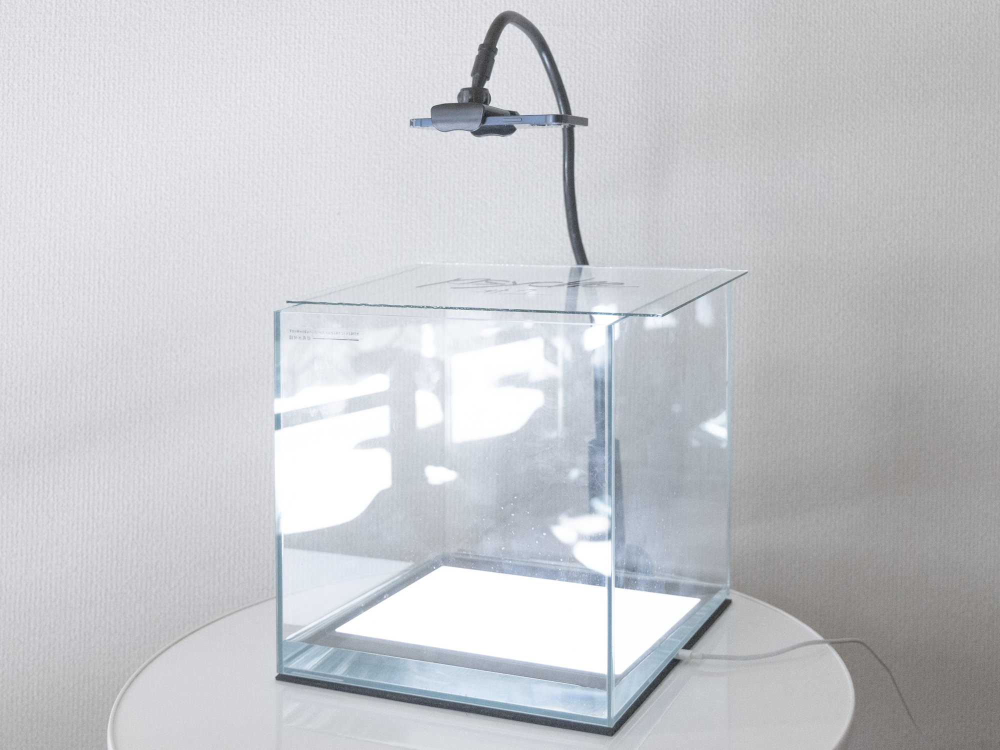
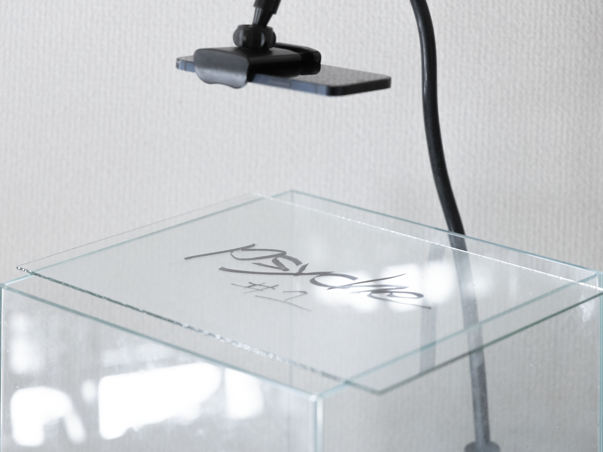

水槽越しにモニターを撮る。
hazuqu
にっけいさんの『psyche』のMVをしました。
アイデア
にっけいさんから提案頂いたのは「真っ白な部屋にただ水槽が置かれている画面」でした。最初は3DCGや実写で水槽をオブジェクトとして用意する予定だったのですが、話を聞いてみて、物体としての「アクリル板」すら透明である必要がでてきました。
映像において透明化されているものは数多くありますエフェクト、動画の縁、ファイルのメタデータ、表示されたモニター、人とモニターの間、メガネやコンタクト、眼球、脳。ので、その内テーマにあうレイヤーを探し、ディスプレイスメントのエフェクトがわかりやすくかつ透明であると考えました。
また手法としては、制作会議の直近にフロクロさんが言及していた『デジアナ』の手法を用いることにしました。
デジタルとアナログを往復してルックをつくるやり方
ツイート図示するとこのようになります。
デジタル-CG映像 →
アナログ-印刷写真 → デジタル-撮影写真 → アナログ-水槽 → デジタル-撮影映像(BGレイヤ) →
アナログ-アクリル板イラスト → デジタル-スキャン写真 →
コンポジット
以前から「画面内映像」のクレジットのもと、モニター内に映像を投影しつつ、さらにモニターをカメラで撮影する方式を取ることがありましたので、その延長としてのデジアナを試すことは容易でした。
構成
30cm×30cm×30cmのガラス製の水槽容器に5Lの水を入れ、容器の上にスマートフォンを貼付したガラス板を設置します。
容器はiPadなどの16:9の薄型モニターの上に置かれ、映像が水を通りカメラに映るように調整します。
水面に反射させる映像は別途小型モニターを用意しておき、適宜水槽の上から向けます。
この写真はメイキングではなくコンセプト画像で、実際にはアクリル板にイラストを描き、逐次スキャナで撮影し、撮った画像を連番としてAftereffects上で合成しています。
このためカメラの被写界深度の影響を受けません。
操作
ディスプレイスメントをつけるためには、波が跳ね返る時間を引いたタイミングで全体を揺らす必要がありました。実際には回転する椅子の上にすべてをガムテープで固定して、水以外が同時に移動回転するようにしています。
揺らし方によってディスプレイスメントの動きは変化します。
椅子を回す場合、水は回転しながら立方体の面に衝突し、すぐに撹拌します。また撮影空間が四角形であることがわかりにくくなります。
椅子を左右に揺らす場合、水はその方向の面に反射し続けます。画面に対して垂直・並行な波ができ、閉じた空間に感じます。小さな文字を読ませつつ、歌詞の感情の機微に合わせて微細な調節ができます。
また水面への反射を演出する際、別に準備していたモニターを手作業で反射させました。
今回は行っていないのですが、強い光を横から入れ反射させる、なにかものを投げ入れる、水質を徐々に変える、などの方法でエフェクトを掛けることができそうでした。
各種モニタについて
iPhoneの古い機種は手ぶれ補正を切ることができないので、Blackmagicのカメラアプリを利用しました。切れない場合水槽の水と同じ様にその場にとどまろうとしてしまい、画面が逆に揺れてしまいます。
水槽に沈めるモニターはiPadを使っていました。
iPadには動画をループ再生する機能がないので、VLCアプリを利用しました。
スライドショーを用いる場合は再生バーが動かせないため撮影時に失敗すると3分間待つことになります。
VLCアプリでは動画をクラウドから再生する必要があり、一旦Driveにアップしてから映像を流します。
♥
⤴